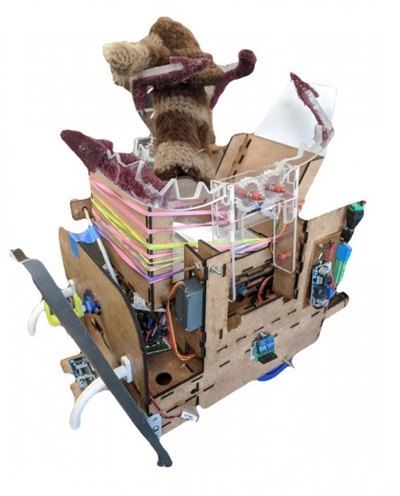

GOAL
Build an autonomous robot that can line follow, detect edges, avoid obstacles, cross gaps, detect and distinguish between infrared frequencies, detect and pick up Ewoks and return them to the safety start position.

A mock-up of the competition surface highlighting some of the biggest obstacles to overcome.

The competition surface where teams went head to head to pick up and return the maximum number of Ewoks within 2 minutes.

Lysanderoth: The Autonomous Robot
Lysanderoth in action; successfully picking up and returning 3 Ewoks under a minute.